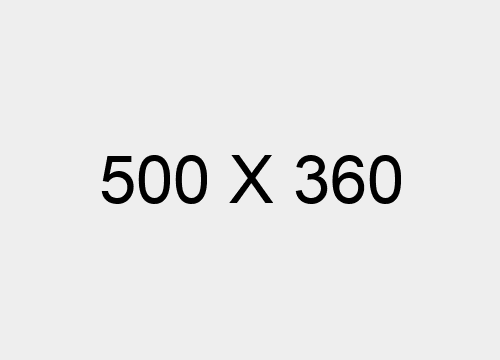
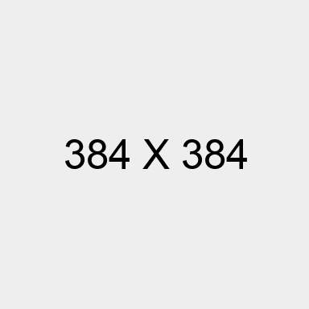
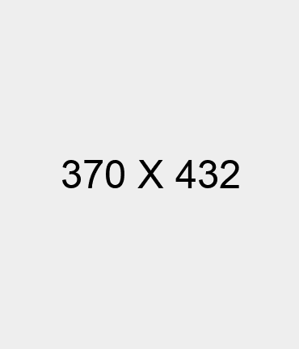

Kami percaya bahwa kreativitas tidak memiliki batas. Dengan bahan alami dan teknik ecoprint ramah lingkungan, Lalungguh Ecoprint menghadirkan karya fashion dan tekstil yang tidak hanya indah, tetapi juga mendukung pelestarian lingkungan. Setiap produk kami adalah cerminan dedikasi untuk keberlanjutan, tradisi, dan inovasi.
Usaha kami berdiri sejak tahun 2022 dengan merek dagang "Lalungguh". Nama "Lalungguh" berasal dari kata "lungguh" dalam bahasa Sunda yang berarti pendiam, kalem, dan tenang. Hal ini menggambarkan produk kami, yaitu kain ecoprint yang menggunakan pewarna dan motif alami, menghasilkan produk kain dengan warna yang kalem atau lembut. Namun, dalam gabungan kata "lungguh", kami sisipkan kata "La" yang dalam bahasa Arab berarti "tidak" atau "jangan". Dengan demikian, filosofi bisnis kami yang terkandung dalam gabungan kata "Lalungguh" memiliki makna "Jangan diam", yang artinya usaha ini harus terus berinovasi dan berusaha tanpa henti, namun tetap bersahaja, tenang, dan membawa nilai-nilai kewibawaan.

Mewujudkan & menumbuhkan ekosistem usaha di tengah-tengah masyarat yang dapat memberikan nilai tambah serta memilki nilai dan berdaya saing tinggi.
Melalui kegiatan ekonomi kreatif dan pemberdayaan masyarakAt guna mendorong peningkatan pendapatan & kinerja kelembagaan serta usaha yang berkelanjutan.
Lalungguh Ecoprint didirikan oleh seorang wanita inspiratif yang memiliki visi untuk mengintegrasikan seni, keberlanjutan, dan pemberdayaan masyarakat.

Nedya Apryanthy adalah seorang pengusaha dan desainer fashion berbasis di Cirebon yang mendirikan Lalungguh Ecoprint pada tahun 2022. Dengan latar belakang di bidang teknologi pangan dan kecintaan terhadap seni serta lingkungan, ia memadukan kreativitas dengan keberlanjutan untuk menciptakan produk ecoprint yang unik. Komitmennya adalah memberdayakan masyarakat, khususnya perempuan, melalui ekonomi kreatif yang ramah lingkungan.